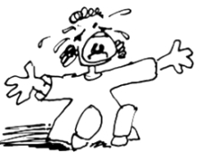

This page has usage examples for the following words:
analgesic(s) 鎮痛薬 ちんつうやく
dull pain 鈍痛 どんつう
gastric ulcer 胃潰瘍 いかいよう
habit-forming 習慣性のある しゅうかんせいのある
inflammation 炎症 えんしょう
pain reliever(s) 痛み止め薬 いたみどめくすり
sedative(s),tranquilizer(s) 鎮静剤 ちんせいざい
severe pain 激しい痛み はげしいいたみ
tablets 錠剤 じょうざい
throbbing pain ずきずき痛む ずきずきいたむ

Every time I have a headache, I buy an over-the-counter analgesic.
頭痛がするとすぐに薬局で処方箋なしの鎮痛薬（剤）を買ってきて飲みます。
ずつうがするとすぐに やっきょくで しょうほうせんなしのちんつうやく（ざい）を かってきてのみます。
I usually take a pain reliever anytime I experience pain.
身体のどこかに痛みがあるとすぐに鎮静剤を服用しています。
からだのどこかに いたみがあると すぐにちんつうざいを ふくようしています。
This medicine not only works on headaches, but also on abdominal pain and toothaches.
この薬は頭痛だけでなく腹痛や歯の痛みなどにもよく効きます。
このくすりは ずつうだけでなく ふくつうや はのいたみなどにも よくききます。
I used to take weak painkillers, but now I take stronger ones.
はじめは、効き目の弱い鎮痛薬を飲んでいましたが、次第に効かなくなってきて、最近では強いのになってきました。
はじめは ききめのよわい ちんつうやくをのんでいましたが、しだいにきかなくなってきて、さいきんでは つよいのになってきました。
I worry that if I continue to take strong painkillers, I may eventually have to take stronger drugs.
このまま長期間服用していると、強い鎮痛薬でないと効かなくなるのではないかと心配になってきました。
このままちょうきかんふくようしていると、つよいちんつうやくでないと きかなくなるのではないかと しんぱいになってきました。
I have recently been diagnosed as having a gastric ulcer.
最近、胃潰瘍があると診断されました。
さいきん、いかいようがあると しんだんされました。
Could it be from analgesics? I have been taking them for a long time.
長年服用している鎮痛薬の影響があるのでしょうか。
ながねん ふくようしている ちんつうやくの えいきょうがあるのでしょうか。
A conversation between a patient and a doctor about analgesic(s)
Patient:
I often hear such words as acetaminophen, aspirin and NSAIDs. I assume that these concern analgesics. And, I understand one should be careful with these medications if one has gastric ulcer. Can you explain why?
Acetaminophen, aspirin あるいは NSAIDs という言葉をしばしば耳にします。鎮痛薬に関した言葉と思われますが、胃潰瘍がある場合は注意が必要と聞きます。どうしてでしょうか？
Doctor:
They are, as you guessed, analgesics. Acetaminophen is sold by the name of Tylenol and ibuprofen by Motrin and Advil. You already know aspirin and Bufferin. These are called in one lump non-steroidal anti-inflammatory drugs (NSAIDs) and used for mild pain. While they are not habit-forming, they are known to inhibit the production of a substance that protect the stomach. Therefore, people who suffer from gastric ulcer should not take these medicines. Although they are not habit-forming, NSAIDs are not recommended for long-term use. The elderly people, in particular, may take lots of analgesics for various pains. Close observation is needed.
おっしゃる通りこれらは鎮痛薬のことです。acetaminophen は Tylenol という商品名で、ibuprofen は Motrin や Advil として売られています。アスピリンや Bufferin はご存知ですね。これらの薬は一括して、 NSAIDs (non-steroidal anti-flammatory drugs／非ステロイド坑炎症薬）と呼ばれ、鎮痛薬の内では”弱い”痛みに使用され、習慣性がない事で知られていますが、鎮痛と共に、胃を保護する物質の生成も阻害する為に、胃潰瘍のある方は使わない方が良いのです。NSAIDs も習慣性がないとはいえ、長期にわたる服用はすすめられません。特に高齢者は、種々の痛みの為に、知らず知らずのうちに多量の鎮痛剤を服用してしまう結果になりがちですので注意が必要です。
My two cents 一言おせっかい
Many analgesics are displayed at pharmacies. You should ask the pharmacists any question concerning these analgesics.
薬局に行くと、棚一杯に鎮痛剤が並んでいます。わからない事は、薬剤師 (pharmecist) に質問してみるとよいですね。
[chi02]
| © 1995-2013 NACOS International Institute. All Rights Reserved. |